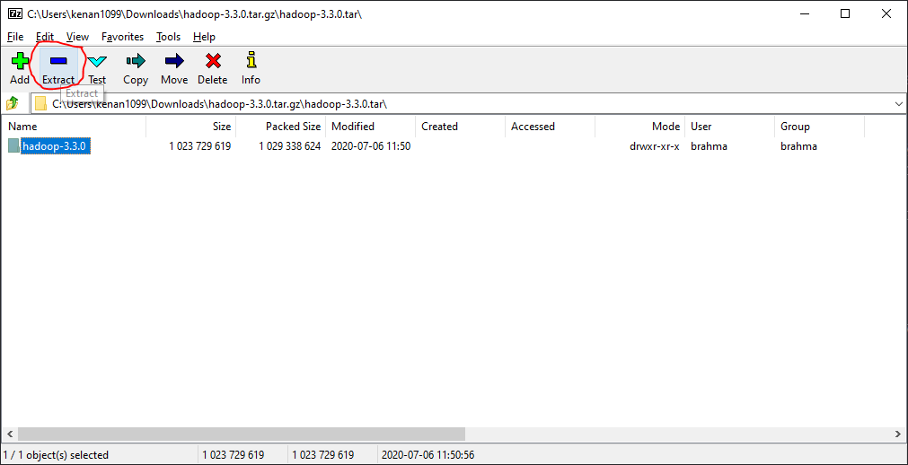

Hadoop Install
Table of Contents
- 1. Java JDK/JRE Installation
- 2. Hadoop Installation
- 2.1. Gathering resources
- 2.2. Installing pre-requisites
- 2.3. Extracting Hadoop
- 2.4. Setting the required environment variables for Hadoop
- 2.5. Installing winutils and Windows-specific libraries for Hadoop
- 2.6. Creating HDFS data locations
- 2.7. Configuring hadoop
- 2.8. Testing / Running Hadoop
- 2.9. Troubleshooting
- 2.10. Credits
1. Java JDK/JRE Installation
If you already have Java’s JDK and JRE installed, then feel free to skip this section.
1.1. Getting the installer
Java 8 is most compatible with the version of Hadoop we will use, so that’s what we’ll get. You can get it from Oracle, but that needs an account, so we can just use OpenJDK instead.
Openlogic maintains an updated build of OpenJDK. Select Java version 8, 64 bit, and Windows. Download both the jdk installer and jre installer.
1.2. Performing the installation
Perform the installation as usual, however, make sure to set the JAVA HOME variable and the installation location as highlighted below.
Don’t forget to repeat the installation for the JRE.
2. Hadoop Installation
2.1. Gathering resources
2.1.1. Reasoning behind choices
We will be using Hadoop version 3.3.0, you can try another version, however you may need to compile winutils.exe and the hadoop libraries manually, which is out of this manual’s scope. If you need to compile it, then this is a great resource.
However, keep in mind, avoid Hadoop 3.2.1 at all costs. It contains a Windows-specific bug in HDFS, more info.
2.2. Installing pre-requisites
Install both the Visual C++ redistributables, and 7-zip (optional). Just run the installers and spam next.
2.3. Extracting Hadoop
The Hadoop .tar.gz archive contains some leftover permissions (probably from a POSIX system) which causes some files to not be extracted properly due to insufficient permissions.
To extract these files properly, we will need to run our archive utility (7zip) as administrator.
- Using the file manager in 7zip, navigate to the hadoop tar.gz archive. (Computer -> C: -> Users -> <your username> -> Downloads)
- Double click the archive
- Double click the .gz file
Select hadoop-3.3.0 and click extract

For the location set it as just
C:\and hit OK- Go to
C:\using Explorer and rename hadoop-3.3.0 to just hadoop
2.4. Setting the required environment variables for Hadoop
Open the “Edit system environment variables” setting
Click on New for the user variables
Fill as below and click OK
- Variable name: HADOOPHOME
- Variable value:
C:\hadoop\bin
Now go to the system variables box, select PATH and click edit
Add the following entries
C:\hadoop\binC:\hadoop\sbin
- Keep clicking OK until all the windows are closed, then log out and log back in
2.5. Installing winutils and Windows-specific libraries for Hadoop
- Extract winutils-master.zip that we downloaded earlier
- Navigate to the version you selected, (for example, 3.3.0)
- Copy the bin folder to C:\hadoop (merge both folders)
- If askd to replace or merge files, click yes for all.
2.6. Creating HDFS data locations
- Navigate to
C:\hadoop - Create a new folder called
data - Enter the
datafolder and create two subfoldersdatanodeandnamenode
2.7. Configuring hadoop
- Navigate to
C:\hadoop\etcand open the following to edit, insert the following between the configuration tags.
2.7.1. core-site.xml
<property> <name>fs.defaultFS</name> <value>hdfs://localhost:9000</value> </property>
2.7.2. mapred-site.xml
<property> <name>mapreduce.framework.name</name> <value>yarn</value> </property>
2.7.3. yarn-site.xml
<property> <name>yarn.nodemanager.aux-services</name> <value>mapreduce_shuffle</value> </property> <property> <name>yarn.nodemanager.auxservices.mapreduce.shuffle.class</name> <value>org.apache.hadoop.mapred.ShuffleHandler</value> </property>
2.7.4. hdfs-site.xml
Replace the filepaths with ones that match your system if need be.
<property> <name>dfs.replication</name> <value>1</value> </property> <property> <name>dfs.datanode.failed.volumes.tolerated</name> <value>0</value> </property> <property> <name>dfs.namenode.name.dir</name> <value>file:////C:/hadoop/data/namenode</value> </property> <property> <name>dfs.datanode.data.dir</name> <value>file:////C:/hadoop/data/datanode</value> </property>
2.7.5. Windows to URI/URL converter (optional)
You can use this tool to convert from a Windows-style location to a URL. Use this if you decide to place your data/name nodes somewhere else. Note that this only works on the web version of this document.
2.8. Testing / Running Hadoop
2.8.1. Initializing namenode
- Open a CMD window
Type the command
hdfs namenode -formatand hit enterExpected output:
2.8.2. Running Hadoop
- Open a CMD window
- Type the command
start-all.sh Note the port used by the Hadoop web app
navigate to
localhost:<port>in a web browser, in this case it’slocalhost:8042Expected output:
2.9. Troubleshooting
2.9.1. “Java path incorrectly set” or something similar when running any hadoop command
Make sure that your JAVA_HOME variable is set. If it’s not, then set it by going to the environment variables settings (see 2.4). Add a new variable, with the name JAVA_HOME and the value depends on your java installation location.
If that’s set correctly, then make sure that your location has no spaces in it. This is more of a Windows issue dating back to the DOS era, if you’re not able to relocate your install, then you can use the DOS 8.3 file naming scheme, so for example ’Program Files’ will be ’Progra~1’.
2.9.2. namenode or datanode Fails to initialize or throws weird errors
- 1. Try to run the winutils.exe by itself
- Navigate to
C:\hadoop\binand run winutils.exe, if you get a missing dll error, then please reinstall the Visual C++ 2013 redist. (see 2.2)
- Navigate to
- 2. If winutils.exe ran fine then try the following
- Make sure to avoid version 3.2.1 of hadoop
- Delete the data folder inside of hadoop and recreate the folder structure (2.6), this can happen randomly due to other Windows/UNIX POSIX incompatibilities involving permissions. (Especially the case if you’re getting I/O Errors in the console)
2.10. Credits
- Dr. Bayan Abu Shawar - Al Ain University